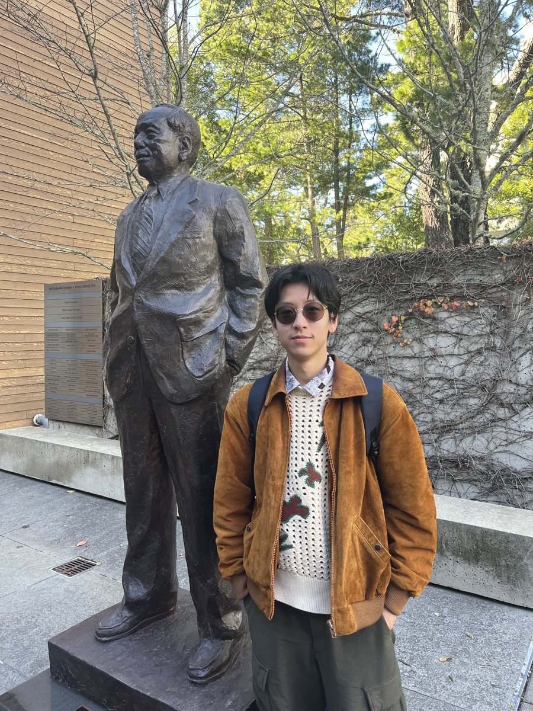

I am currently a senior at UC Berkeley studying mathematics. I spent my freshman and sophomore years at UC Irvine. I've met some wonderful, lovely, and outright life-changing people at both schools.
I'm applying to graduate schools this year.
I have had great fun reading the following articles.
- Navigating the AI crisis: a humble guide for students, by Tarik Aougab.
- on doing Real work, by jessica dai.